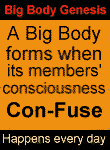

Invitation to an Interdisciplinary Internet Colloquium
on Corporate Being and Life on Earth

BIG BODY HEURISTICS
ARE CORPORATIONS REALLY ALIVE?
(Are they now our dominant species?)
Living System Perspectives on Corporate
Evolution, Anatomy and Eco-Social Pathologies
"A fascinating conceptual breakthrough."
- - David Korten
"An extraordinarily imaginative
and important idea."
- - Howard Zinn
CONFERENCE DATES : MARCH 3 ~ 20, 2000
To attend the conference yourself, click HERE!
REGARDING BIG BODIES
Although immense corporate bodies now wield definitive power over our economy, politics, educational agenda and popular consciousness, incredibly little attention has been paid to their evolution, common attributes or basic nature.Many decades ago, large organizations were recognized as true "living systems." That is, they behave purposefully, cohere over time, adapt to their environment, ingest/process /excrete substances, display homeostatic reflexes, maintain an internal sense of self /identity, respond (aggressively/ defensively) to perceived threats, learn, grow, multiply, age, die, etc.
Inexplicably, the full implications of this insight - that our species shares the biosphere with an exponentially larger, more potent and rapidly evolving life form that may not necessarily share our values or aspirations - have never been adequately explored. For those who sense that these bodies may now pose a clear and present danger to our cultures, environment or evolutionary future, let that exploration finally begin here...
ANCESTRAL INTIMATIONS
| "The task is not so much to see what
no one has yet seen, but to think what nobody has yet thought, about that which everybody sees." - - Erwin Schrödinger
"Now, if the cooperation of some thousands of millions of cells in our brain
can produce our consciousness, a true singularity, the idea becomes vastly
more plausible that the cooperation of humanity, or some sections of it,
may determine what Comte calls
a Great Being."
"A power has risen up in the government greater than the people themselves,
consisting of many, and various, and powerful bodies, combined into one mass,
and held together by the cohesive power of the vast surplus of the banks."
"The government has ceased to function,
"Nothing vast enters the life of mortals
|
CONTENTS
- CONFERENCE OVERVIEW
- BACKGROUND
- PRELIMINARY REFERENCE PAPERS
- APPENDIX: Introduction to Computer Conferencing
- CONTACT INFO
- TO JOIN THIS CONFERENCE YOURSELF, CLICK HERE!

CONFERENCE OVERVIEW
PURPOSE & THEMES
BIG BODY HEURISTICS "Are Corporations Really Alive?" is probably the world's first interdisciplinary conference on corporate life. It is certainly the first on-line conference to ever address the evolution, physiology, behavioral patterns and eco-social impact of large living systems, specifically the powerful corporate bodies that now dominate our economy, media and governance. Participants from the fields of living systems theory, evolutionary biology, history, political science, mass communications, environmental protection, corporate sociology, economics and science fiction will address such themes as:The Evolution Of Large Corporate Bodies
Including genesis and prototypes of vast bureaucratic entities (e.g., early military legions; imperial hierarchies; Catholic Church; Euro-crown chartered corporations / "trading companies"; 19th century trusts, monopolies & holding companies; state socialist bureaucracies; zaibatsu, keiretsu, diversified conglomerates; et rapidly accreting cetera); corporate Darwinism; evolutionary competition with other species (e.g., ours); etc.Corporate Membranes, Identity and Vitality
Including the objective nature of attention structure, organizational bonds, and esprit de corps; the psychology of self-surrender/ self- sacrifice/self-synchronization; the demographic distributions of hierarchy-friendly vs hierarchy-averse individuals; how the distribution can be skewed by education, propaganda and other forms of social conditioning; etc.Corporate Physiology and Metabolism
Including various paradigms of nutrient/ resource acquisition (feeding), processing (digestion) and production/disposal (secretion/excretion).Corporate Taxonomy
Including the conformation of different corporate breeds (e.g., commercial, religious, military, communist/socialist, worker- controlled, etc.)Corporate Ethology
Including corporate bodies' common modes of behavior with respect to competitors, recalcitrant constituents, unprotected resources, societal/ environmental restraints; institutional memory; learning functions; etc.Corporate Scale and Eco-Social Pathology
Including consideration of:
Corporate Dominion vs Democratic Rule- the scale at which corporate bodies lose meaningful contact with the Earth, local society and/or basic human concerns;
- the corporate accelerated pace of technological change and cultural disruption;
- the effects of corporate media on civil society, consumption and consciousness; etc.
Including:
Imagining the Post-Corporate World- the problematic endowment of corporate bodies with human rights;
- their rapid acquisition/consolidation of social/political power;
- conflicts between their monotonic economic agendas and other dimensions of value.
Including:
- the cultural/social/political pressures needed to downscale/domesticate Big Bodies;
- new paradigms of human-scale economic and political organization;
- transitional strategies, priorities, time frames...
DATES
March 3rd (Friday) ~20th (Monday)
- Virtual/Visible: Suite of Internet web pages
- Actual: Participants' respective homes or offices
FORMAT
(Also see Computer Conferencing Intro in Appendix below) Asynchronous Caucus computer conference : At least once each day for the week of the conference, conferees present perspectives, follow debate and contribute comments via email or fax or directly to the home page where the conference is presented. (Detailed explanations of each mode of participation will be forwarded to each participant in advance along with further Delphi-style briefing papers.)PARTICIPATION
Conferees : Read/Write - Each conferee is requested to read and respond to other participants' contributions at least once each day for the term of the conference via email, fax or the conference homepage.Guest/observers (general public) : Read only (but self- registered guests may write to a separate comment page for moderated forwarding to the conferees. Exceptionally active and insightful guests may occasionally be invited to participate directly in the conference.
USE OF MATERIAL
All proceedings will be archived for enduring on-line reference and later edited (with conferees' aid and consent) for publication.LIST OF INVITED PARTICIPANTS (partial)
(Capitalized surnames have been contacted and tentatively agreed to cooperate)
Ever since James Grier Miller's groundbreaking opus "Living Systems" appeared in the early '70s, there has been a widening recognition of the unique semi-autonomous life forms that either comprise or surround human being. Miller's research teams listed 7 levels of animate singularity including the cell, organ, individual, group, organization, nation-state and transnational commercial/financial/ security system. Lovelock and Margulis later escalated this hierarchy yet another level by defining the Earth itself as Mother living system of all, and evolutionary biologist Richard Dawkins added a new conceptual basement to accommodate the realm of the self-ish, purposeful gene.
Dean ALGER
John Perry BARLOW
Joan BAVARIA
Ernest CALLENBACH
Fritjof CAPRA
Noam CHOMSKY
Michael Crichton
Richard Dawkins
Kevin DANAHER
Charles DERBER
Ronnie DUGGER
Richard GROSSMAN
Randy HAYES
Hazel HENDERSON
Dave HENSON
Mae Wan HO
Dee Hock
Josh KARLINER
David KORTEN
Frances Moore LAPPE
Lynn Margulis
James Grier MILLER
Michael Moore
Ralph NADER
John RENSENBRINK
Howard RHEINGOLD
Kirkpatrick SALE
Vandana Shiva
David Suzuki
Robert WEISSMAN
David Sloan WILSON
BACKGROUND
While the "lower" levels (up to the individual) and even the full "Gaian" system now enjoy gratifying academic scrutiny, there has been curiously little interest in applying living system analysis or insights to larger collective life forms. That is, while most observers admit that vast corporate entities (herein generically termed Big Bodies) now exercise predominant power over our economies, politics, media, and even educational agendas, as a "species" of living system these bodies remain resolutely unexplored in academia, undebated in social discourse, and ill- defined in the public mind.
(While much may be said about this corporation or that industry, as a society we still stand mute before these bodies as an emergent new class of being, and continue to treat terms such as social organism, leviathan, corporate body, etc. as quaint metaphors rather than heuristically useful descriptions of meta- biological entities.
Even though corporate bodies now legally command the same rights and privileges as "natural persons" and their behaviors now deeply affect our consciousness, societies and environment, Multinational Monitor's Rob Weissman recently recounted that a detailed search of US doctoral theses over the last two decades did not turn up a single paper that even attempted to address corporations generically. That is, no aspiring Ph.D. candidates of late have thought it important to:
- examine corporations as purposeful systems or a dynamic new class of social actors;
- systematically assess their evolutionary antecedents or history;
- consider their collective role in our own evolutionary drama;
- compare corporate life forms' common physiological or behavioral traits;
- analyze their phenomenal modern growth and rise to power; or
- even explore organismic terms for corporate bodies as a heuristic tool.
Given the lack of serious scholarship, media debate or social commentary on the evolutionary or animate aspects of large corporate entities, this will probably be the first conference ever to address these issues, let alone examine these bodies as pathogens with respect to the eco-social surround.
(While Big Bodies have marshaled enormous PR resources to tout their benevolence and indispensability, there has been remarkably little attention paid to the systemic harm that large scale organizations visit upon our social and natural environments. There are fortunate signs from the increasingly alarmed activist/populist community that this is about to change.
"Practically every progressive struggle--campaign finance reform, sweatshops, family farms, fair trade, health care for all, unionization, military spending, tax reform, alternative energy, healthy food, media access, hazardous waste dumps, redlining, alternative medicine, you name it--is being fought against one cluster of corporations or another. But it is not that corporation over there or this one over here that is the enemy. It is not one industry's contamination of our drinking water or another's perversion of the lawmaking process that is the problem--rather it is the corporation itself that must be addressed if we are to be a free people... The piecemeal approach to fighting corporate abuses keeps us spread thin, separated, on the defensive, riveted on the minutiae, and fighting on their terms. Piecemeal battles must certainly continue, for there are real and immediate corporate harms to be addressed for people and communities. But it's time for our strategic emphasis to shift to the offensive, raising what I believe to be the central political issue for the new century: Who the hell is in charge here?" - - Jim Hightower)
PRELIMINARY REFERENCE PAPERS
(Delphi briefing cycle: round one)
Ref #1: Personal communication from Ernest Callenbach, 11/20/99
Excerpts from a work in progress
Ref #2: Excerpts from "E PLURIBUS YAMATO:
The Culture of Corporate Beings" by W.D. Kubiak
Ref #3: Excerpts from "LUSIONS - Suggestive Parallels between
Japanese Corporations & Biological Systems" collated by WDK
Ref #4: Reviews & Excerpts from THE LIVING COMPANY
by Arie de Geuss, a lifelong executive in the Royal Dutch/Shell Group.
Ref #5: Levels of Evolutionary Selection: Groups vs. Individuals
by David Sloan Wilson
Ref #1: Personal communication from Ernest Callenbach, 11/20/99
Excerpted from a work in progress:
"The insight that corporations are a kind of organism that has infested our modern world is not original with me. I claim only to begin the task of spelling out the "natural history" of this unique life form as we encounter it today. We might suspect that corporations are a life form because of their name: a corpus, in Latin, is a body. But the realization has been slow to dawn..."To understand an organism, we must study:
"Corporations relate powerfully and intricately with other aspects of their environment, not only the biological world but also with the lives and behavior of nations and international organizations. They control immense physical and monetary resources. Immortal, in principle, they live on far beyond the lifetimes of their founders or any individual human participants...
- its genetic script and how it is transmitted
- its structure and physiology
- its food or energy sources
- its metabolism, including its ingestive, digestive and excretory systems
- its evolutionary origins, as far as we can determine them. Only then can we understand its ecology - its place in the biological universe...
"Corporations can seem abstract and incorporeal, despite the overwhelming power we know they mobilize. Their control over the human cells that make them up is largely invisible to our conscious minds. But as it grows more absolute, this control also becomes more obvious to those who learn how to see it...
"Corporations are special kinds of living beings. In one sense they appear to be utterly fictive ("legal fictions"), created by acts of legislation and maintained only by the allegiance of other organisms, namely humans. In daily reality, however, as we know from the experience of practically every moment of our contemporary waking lives, they have not only the physical reality of comprising persons, technological/ architectural facilities, and communications capabilities but immense force. They act as organisms for concerted purposes with predictable patterns of behavior. We constantly speak of corporations as if they were living beings; the business pages are full of news and speculation about what individual corporations are up to. Such manners of speaking indicate our folk wisdom about corporations, and I believe folk wisdom here is perfectly correct...
"Corporate beings have evolved over a considerable history and doubtless they are evolving even now, as all living species do. However, until we grasp their present strategies for survival and proliferation, we will be utterly unable to predict their future - much less combat their dominance."
Ref #2: Excerpts from "E Pluribus Yamato: The Culture of Corporate Beings"
(Full text available on Internet at: http://www.nancho.net/kipower/kisoma.html)
We live in the age of corporate organisms. Though no formal announcements have been issued it's becoming harder to ignore that they have wrested control of the Earth from Homo Sapiens and supplanted us as the planet's dominant species. It is they - the multinationals, government bureaucracies, religious hierarchies, military bodies, et al. - not individual humans, that generate our era's character - its patterns of wealth & poverty, its technological progress & ecological peril, its entertainment & political agenda. They have, in short, taken over, and nowhere more so than in Japan. Japan in fact owes her incredible economic power today not merely to management, consensus or monoethnicity, but to her carefully bred population of vast corporate bodies - the most aggressive, efficient, and highly evolved the world has yet experienced. To understand the magnitude of her accomplishment we must first suspend considerable disbelief and try for a moment to take social organisms seriously, not just as a metaphor but as an actual new class of being. Japan quite apparently does, or at least she has intuited their true nature more clearly than any previous culture:
(1855) "The rulers feed the people and in return the people have a great debt of gratitude toward them. Ruler and people are one body ("Kunshin Ittai")...This is a characteristic of our country alone - ruler and subjects form one body!" - - Yoshida Shoin, Edo Philosopher whose works deeply influenced the architects of the Meiji state.(For now let us confine our fieldwork to Japan's corporate jungles and identify our emergent collective beings quite simply as: "Any large, bureaucratically or hierarchically organized social body that persists in time, enjoys at least partial autonomy and economically supports a large number of functionaries, if not all its membership" - with "large" meaning a number too numerous for mutual acquaintance or direct, face-to-face interaction - arbitrarily, say, 500+.) Thanks to diverse terminology and social functions we think we understand important differences between Mitsubishi & the central government, or the Self Defense Forces & the Sokka Gakkai, or the National Police Force & the major yakuza syndicates. But viewed from a sufficient height and distance these vast corporate bodies seem to embody far more similarities than differences. Moreover, they appear to fulfill all the definitional requirements of true complex "organisms".(1936) "In his everyday existence the average Japanese acts, feels, thinks, decides, as if Japan would act through him...He stands to his group in a relation in which we imagine the life of a cell stands to the life of an organism; or at the very least it approximates to that relation in a degree observable in no other civilised nation." - - Kurt Singer, Professor of Economics, Tokyo University
(1970) "The Japanese language has no term for the word leadership... Responsibility is diffused through the group as a whole and the entire collectivity becomes one functional body in which all individuals, including the manager, are amalgamated into a single entity...The strength of this structure lies in its ability to efficiently and swiftly mobilize the collective power of its members. The importance of its contribution to the process of Japanese modernization is immeasurable." - - Dr. Chie Nakane, Professor of Sociology, Tokyo University
All of them, for example, share basic common organizational processes, structures and energy needs; generate psychic membranes that divide their membership from outsiders; take in and process information and nourishment from the environment; specialize, control and outlive their human/cellular constituents; can reproduce, spawning subsidiary bodies; and are primarily concerned with their own survival and growth. In a very real sense they represent a distinct, highly evolved life form, in fact a species if you go by Webster: "Species - a category of biological classification comprising related organisms or populations...having common attributes, a common name and potentially capable of interbreeding." The common attributes abound and history's menagerie of corporate hybrids - commercial religions, ecclesiastical governments, academic businesses, governmental trading bodies, etc. - prove that the monsters are mutually fertile. All that is wanting then is a "common name", something like "dog" that transcends the apparent discrepancies between Chihuahuas, Bulldogs and Great Danes to indicate that we are in fact dealing with a single bundle of creation. This is a serious deficiency, for without a clear category for their common existence it is difficult to think of, speak of or visualize them. For now we shall simply term them Big Bodies or employ traditional organismic vocabulary.
Japan was hardly the first to recognize organismic realities. The biological metaphorics for integrated collective bodies are ancient on both sides of the planet. Politics and medicine were sister disciplines in pre-Han China and the rulers' husbandry of the societal organism was dictated by the same common sense that informed the disciplines of human health and healing. The Hindu Brahmins of the period were also describing their community's castes in terms of the limbs and organs of a physical body (and predictably selecting themselves for the preeminent and metabolically privileged role of the brain). And further to the West, St. Paul was conjuring a new sacerdotal monad, the "mystical body of Christ", that would soon incorporate all of Europe.
'They [the emerging corporations] have all commodities under their control and practice without concealment all manner of trickery; they raise and lower prices as they please and oppress and ruin all the small tradesmen, as the pike devour the little fish of the water just as though they were lord's over God's creatures and free from all the laws of faith and love." - - Martin Luther, "On Trading and Usury", 1524Though Western biological similes were often no more than heuristic conceits (Hobbes' Leviathan, Frank Norris' Octopus, Franz Neumann's Behemoth, etc.) there was obvious foreboding of the organic nature of societal life forms and their increasing power over humans both inside and outside their membranes. It was not until the turn of this century, however, that ethology, biology and social psychology achieved enough sophistication to pursue the analogy seriously. Between 1890 and the 1920's organismic thinking picked up enormous momentum. Researchers in France, Germany and England established the concept of insect societies as "supraorganisms" and began to draw telling parallels between hives, nests and termitaries and highly integrated human organizations. Scores of studies were published on colonial organisms, cooperative life forms & other collective bio-realities.The western classics on group consciousness also appeared from this ferment. Schaeffle's The Life & Limbs of the Social Body, Le Bon's The Crowd, and MacDougal's The Group Mind all clearly demonstrated that something psychologically new and evolutionarily significant emerged in human collectives, something far greater than the sum of the parts.
At the end of the '20's, however, two obstacles - one political, the other conceptual - arose to derail the entire international inquiry. The political problem was fascism. Organismic thinking seemed to play right into the bloody hands of fascist ideologues. If indeed great social bodies were more powerful than men - outproducing them, outliving them, and supporting vast numbers of them - then they also were plausibly more important. (As an Osaka executive, who destroyed evidence and himself to thwart an investigation of his firm, wrote before dying: "Please accept this humble offering. I am but one. The kaisha [corporation] is many. My life is transient. The kaisha is forever!")
The social organism was thus an evolutionary advance upon mankind much as the multicellular animal was an advance upon protozoa. And as a "greater whole" its commonweal "naturally" took precedence over its individual members'. From a corporatist standpoint then, anyone threatening the unity, efficiency or "health" of the collective body could and should be sacrificed with the same insouciance with which we excise a cancer or a gangrenous toe. Eliminating dissidents, in other words, was not a question of morality but of rational social medicine. For Western liberals who tacitly tolerated executions for treason and desertion in their own societies, this thinking (and the organismic research that lent it credence) presented an ethically thorny and unwanted problem, especially at a time when the Nazi organism was threatening to engulf all of Europe.
The conceptual problem was rather more straightforward: the absence of an equivalent of protoplasm to explain what really connects and integrates a social body's members. Language may allow individuals to interact but many mutually hostile organisms can arise in the same linguistic sea. What binds them internally? Group consciousness is fine in theory but what does it really consist of? If nothing can be physically pointed out or quantified, organismic research is mere poetry, unscientific and a waste of time.
Neither of these difficulties phased the Japanese, however. Fascism as they understood it was a dandy idea. Didn't it come from the Roman fasces (a bundle of rods with a protruding ax- head) that symbolized social unity (bundle) under state authority (ax)? Didn't it virtually deify a strong central leader, extol self- sacrifice and collective effort, and promote belongingness with uniforms, symbols and ceremonies? What else had Japan been working to realize since the Meiji Restoration? Organismic theory of course abetted these efforts and would play an important role in ultranationalist debates on the nature and primacy of the kokutai [the mystical body of the Japanese state].
As for the reality and substance of social bonds the Japanese had the enormous advantage of the ki concept which we discussed at length earlier in "Ki and the Arts of Sex, Healing & Corporate Body Building", [Kyoto Journal #5]. Although in Eastern medicine ki generally means psycho-biological vital force, we noted that in the social sphere ki was seen as the living force of attention or directed consciousness, a force that carried energy from the perceiver to the perceived and tied them together, much as energy exchange bonds together atoms and molecules. Social ki, while invisible, is as palpable as the wind to many Japanese and they have scores of expressions to describe its effects upon the minds & bodies of those sending and receiving it. Ki or attention's patterned circulation within a group bonds and integrates the members and determines their collective "structure". The strength and cohesion of any social body is therefore to be measured by how much of the members' ki or attention is devoted solely to the collective and its shared concerns. Attention to strictly personal matters, outside interests, other groups, etc. constitutes a weakening "leakage" of the collective's adhesive energies and esprit de corps. Japanese corporate bodies therefore employ dozens of tactics [company unions, company housing, group vacations, company sports teams, drinking groups, company cemeteries, etc.] to keep members' ki circulating totally within its membranes:
Nakane: "The kaisha [corporation] is the community to which one belongs primarily, and which is all- important in one's life. Thus in most cases the company provides the whole social existence of a person, and has authority over all aspects of his life...[Its] power and influence not only affect and enter into the individual's actions, it alters even his ideas and ways of thinking...Some perceive this as a dangerous encroachment upon their dignity as individuals; others, however, feel safer in total group consciousness. There seems little doubt that in Japan the latter group is in the majority."
Ref #3: Excerpts from LUSIONS: Suggestive Parallels between
Japanese Corporations & Biological Systems collated by WDK
(See complete text at http://www.nancho.net/bigbody/lusions1.html)
PHILOSOPHICAL OVERVIEW "Does not the only way out of our dead-end lie in introducing boldly into our intellectual framework yet another category to serve for the super individual? After all, why not? Geometry would have remained stationary if it had not in the end accepted 'e' and other incommensurables. The calculus would never have resolved the problems posed by modern physics if it had not constantly continued to conceive new functions. For identical reasons biology will not be able to generalize itself upon the whole of life without introducing new concepts, that it now needs to deal with certain stages of being which common experience has hitherto been able to ignore - in particular that of the "collective". Yes, from now on we envisage, beside and above individual realities, the collective realities that are not reducible to their component elements yet are in their own way just as 'objective'...
excerpted from The Phenomenon of Man
by Pierre Teilhard de Chardin"The innumerable foci which share a given volume of matter [or society] are not independent of each other. Something holds them together...We do not get what we call matter [or society] as a result of the simple aggregation and juxtaposition of individual entities. For that, a mysterious identity must absorb and cement them, an influence at which our mind rebels in bewilderment at first but which in the end it must perforce accept.
"We mean a sphere 'above' the individual centres and enveloping them. Throughout these pages, in each new phase of anthropogenesis, we shall find ourselves faced by the unimaginable reality of collective bonds, and we shall have to struggle with them without ceasing until we succeed in recognizing and defining their true nature. Here in the beginning it is sufficient to include them all under the empirical name given by science to their common initial principle, namely 'energy' [or in Eastern terms and more precisely: Ki or attention flows].
"Under this name, which conveys the experience of effort with which we are familiar in ourselves, physics has introduced the precise formulation of a capacity for action or, more exactly, for interaction. 'Energy' [or attentive Ki] is the measure of that which passes from one entity to another in the course of their transformations. A unifying power, then, but also, because the entity appears to become enriched or exhausted in the course of the exchange, the expression of structure.
"From the aspect of energy, material or social entities may now be treated as transient reservoirs of concentrated power. Though never found in a state of purity, but always more or less granulated (even in light), energy nowadays represents for science a kind of primordial flux in which all that has shape in the world is but a series of fleeting 'vortices'... "
"When poured out on the ground, a sheet of water quickly breaks up into streamlets and then into definite streams. Similarly, under the influence of various causes (such as attraction and mutual adjustment, the selective influence of the environment and so on) the fibres of a living a mass in the process of diversification tend to draw together, to bind, following a restricted number of dominant directions [or, among men, social cultures]. In the beginning this concentration of forms around a few privileged axes is indistinct and indefinite; it involves a mere increase, in certain sectors, of the number or density of the fibres. Then gradually the movement takes shape. True nervures or veins become visible...at this stage individual fibres may still partially escape from the network which is trying to contain them [c.f. the schismatic heresies of the early Church, the break-away of post-revolutionary factions, etc.]. But at this point there takes place what may be called the final aggregation or final separation (according to the point of view we take). Having reached a certain degree of mutual cohesion, the fibres isolate themselves in a closed sheath that can no longer be penetrated by neighboring sheaves. From now on their association, the 'bundle', the corporate body, will evolve on its own, autonomously. The species has become individualized. The phylum has been born."
Imagine for a moment what inclusion in this 'final
aggregation' might subjectively mean to our sentient
fibre, the individual ningen, as he is terminally
ensheathed. Prof. Chie Nakane, perhaps Japan's
foremost sociologist offers some empathic assistance. "This consciousness is perhaps revealed in the way a Japanese uses the expression uchi (my house or home) to mean the place of work, organization, office, or school to which he belongs. The term kaisha [company] does not mean that individuals are bound by contractual relationships into a corporate enterprise, while still thinking of themselves as separate entities: rather, kaisha is 'my' or 'our' corporate body, the community to which one belongs primarily, and which is all-important in one's life. Thus in most cases the corporation provides the whole social existence of a person, and has authority over all aspects of his life; he is deeply emotionally involved in the association...to the point that the human relationships with this 'household' group are thought of as more important than all other human relationships... This 'family' or corporate group even envelops the employee's personal family; it engages or "surrounds" him "totally" ("marugakae" in Japanese)... The power and influence of this group not only enters into the individual's actions, it alters even his ideas and ways of thinking. Individual autonomy is minimized. When this happens the point where group life ends and private life begins can no longer be distinguished... The members' sphere of living is usually concentrated solely within the place of work. Even marriage is within the company is prevalent... Also the provision of company housing is a regular practice among Japan's leading corporations. Such company houses are usually concentrated in a single area and form a distinct entity within, say, a suburb of a large city. Thus, even in terms of physical arrangements, a corporation with its employees and their families forms a distinct social body."With group-consciousness so highly developed there is virtually no social life outside the particular corporate body on which an individual's major economic life depends. Thus group participation is simple and unitary. It follows then that each group or corporation develops a high degree of independence and closeness, with its own internal law which is totally binding on all members." - - From JAPANESE SOCIETY by Chie Nakane
Returning to Du Chardin (and substituting "corporation" for "phylum" in his text) :
"The living 'bundle': many observers still refuse to see or admit the reality of this strand of life in the process of evolution. They do not know how to see, how to make the necessary adjustments in their vision.
"This corporation is first of all a collective reality. Therefore, to see it clearly, we need to look from a sufficient height and distance. Examined too closely, it crumbles into unevenness and confusion. We fail to see the wood for the trees.
"Secondly, the corporation is polymorphous and elastic. Like a molecule, which ranges through all sizes and degrees of complication, they may be small or vast in extent. There are simple corporations and corporations composed of corporations. Phyletic unity is not so much quantitative as structural; so we must be ready to recognize it on every scale of dimension.
"Lastly, the corporation has a dynamic nature. It only comes into view at a certain depth of duration, in other words only in movement. When immobilized in time, it loses its features and, as it were, its soul. Its motion is killed by a 'still'.
"Considered without these provisos, this corporation might well be thought to be just one more artificial entity carried out of the continuum of life. But looked at in proper magnification and light, it can be seen to be a perfectly defined structural reality."
- - From THE PHENOMENON OF MAN
-- CORPORATE COLLUSION - BIO- PATTERNS -- "In the siphonophore colony we call the Portuguese man-of-war, the transparent blue bladder that floats on the sea surface is one animal; each stinging tentacle that hangs from this float is another, each leech-like feeding polyp still another, and the community is further enlarged by separate male and female reproductive polyps. None of these animals can exist apart from the community and the community exists in this communal life style... There is nothing for any member but total and utter dependence upon the greater 'community.'
"The Portuguese man-o'-war, however, is not a society; it is a colonial organism - at least this is the name given by zoologists to this kind of cooperative living... A society exists as the result of interactions between the members comprising it, actions they perform as individuals. These interactions must be crucial to the maintenance and coherence of the society. Unlike invertebrate societies, vertebrate societies are held together by threads of attentive tension, which bind every member to every other member." - - From PARABLE OF THE BEAST
"The acquisition of the extremely delicate ways of conducting personal relations in Japan requires considerable social training, though most Japanese achieve them through their social life from childhood onwards. Not only foreigners but also even those Japanese who spend their teens or twenties abroad face considerable difficulty in meeting all the complicated techniques of personal relations, which do not require much intellectual maneuver, but demand highly sensitive and nervous procedures. Indeed, these procedures involve a degree of tension, nervous fatigue, and expenditure of emotion not normally found in such measure in other societies." - - From JAPANESE SOCIETY
"Harmony must be maintained in the collectivity because conflicts between the members would disrupt the smooth attainment of collective goals. Thus harmony, willingness to compromise, unaggressiveness, etc. are highly valued, whereas disputatiousness, contentiousness, ambition, or other disruptive behaviour is strongly devalued.
"In order to avoid friction a great deal of everyday life is formalized. Close conformity to a multiplicity of detailed prescriptions for behaviour [analogous to orderly biological processes] tends to reduce all conflict to a minimum and ensure the smooth functioning of the collective life. " - - From TOKUGAWA RELIGION
"The right biological metaphor for any society [or persisting corporate group] is not that of the fully developed functional structure of an animal, but that of colonies of cells or protozoa which constitute very loose systems... in that they have, to quote Julian Huxley, 'an unstable fluctuant body with a semi- permeable external membrane for defense against outsiders and a continued life with definite functions carried on by living protoplasmic units.' That is to say, there exist intermediary conditions in which we are not certain whether we are dealing with a true individual or a true system." - - From BIO-CONCEPTS IN POLITICS
"Plasmodium or Syncytium - A mobile body of naked protoplasm formed by the fusion or aggregation of independent amoeboid bodies without fusion of their nuclei. Plasmodia are characteristic of slime molds and certain genera of fungi and bacteria...
"True plasmodia may grow by the incorporation of independent cells that subsequently lose their cell walls and individual integrity to the collective body (Spongospora), or by synchronous division of internal nuclei floating freely in the communal cytoplasm (Myxomycetes); certain species (e.g., Acrasiales) generate a 'pseudo-plasmodium' in which incorporation, though functionally complete, does not entail the complete dissolution of internal cellular membranes. The aggregated cells thus maintain some semblance of organic identity...[though the collective 'body' thereafter determines all their subsequent behavior]." - - From ENCYCLOPEDIA BRITANNICA
"The Japanese language has no term for the word leadership... Responsibility is diffused through the group as a whole and the entire collectivity becomes one functional body in which all individuals, including the manager, are amalgamated into a single entity...The strength of this structure lies in its ability to efficiently and swiftly mobilize the collective power of its members. The importance of its contribution to the process of Japanese modernization is immeasurable...
"Just how much a Japanese depends on, and expects from, his coworkers may be incomprehensible to the outsider. There are no clear lines which divide one's own from another's..." - - From JAPANESE SOCIETY
"In his everyday existence the Japanese acts, thinks, decides, as if Japan would act through him; if asked to what extent his acts emanate from himself, and what extent from his group, he would not only be unable to give a rational account, but he would also be unwilling to admit the validity of the question. He stands to his group in a relation in which we imagine the life of a cell stands to the life of an organism; or at the very least it approximates to the relation in a degree observable in no other civilized nation." - -
From MIRROR, SWORD AND JEWEL
Ref #4: Reviews & Excerpts from "THE LIVING COMPANY" by Arie de Geuss, a lifelong Royal Dutch Shell insider. It presents the clearest statement yet of corporate self-awareness and manifest destiny:"The living company does not exist solely to provide customers with goods, or to return investment to shareholders... From the point of view of the organization itself, all of these purposes are secondary... Like all organisms, the living company exists primarily for its own survival and improvement: to fulfill its potential and to become as great as it can be."
BUSINESS WEEK, July 14, 1997
"Biology is turning up in the strangest places. Just consider Arie de Geus' THE LIVING COMPANY. De Geus employs biological metaphors in order to analyze corporate management... and draws upon experiences from his nearly 40-year career at Royal Dutch/Shell Group....Provides an interesting challenge to basic assumptions about the way companies work."NATIONAL PRODUCTIVITY REVIEW, Autumn 1997
"A seminal book that should initiate far-ranging discussions regarding the nature and purpose of the company."
THE LIVING COMPANY by Arie de Geus
(Excerpts from the Prologue)The Lifespan of a Company
In the world of institutions, commercial corporations are newcomers. Their history comprises only 500 years of activity in the Western world, a tiny fraction of the time span of human civilization. In that time, as producers of material wealth, they have had immense success... Yet, if you look at them in the light of their potential, most commercial corporations are dramatic failures-or, at best, underachievers. They exist at a primitive stage of evolution; they develop and exploit only a fraction of their potential. For proof, you need only consider their high mortality rate. The average life expectancy of a multinational corporation - Fortune 500 or its equivalent - is only 40 or 50 years. This figure is based on most surveys of corporate births and deaths...We commissioned the study, written by two Shell planners and two outside business school professors, to examine the question of corporate longevity. From the very first moment, we were startled by the small number of companies that met our criteria of being large and older than Shell. In the end, we found only 40 corporations, of which we studied 27 in detail, relying on published case histories and academic reports. We wanted to find out whether these companies had something in common that could explain why they were such successful survivors. After all of our detective work, we found four key factors in common:
Defining the Living Company
- Long-lived companies were sensitive to their environment. Whether they had built their fortunes on knowledge (such as DuPont's technological innovations) or on natural resources (such as the Hudson Bay Company's access to the furs of Canadian forests), they remained in harmony (?!) with the world around them. As wars, depressions, technologies, and political changes surged and ebbed around them, they always seemed to excel at keeping their feelers out, tuned to whatever was going on around them..
- Long-lived companies were cohesive, with a strong sense of identity. No matter how widely diversified they were, their employees (and even their suppliers, at times) felt they were all part of one entity... Case histories repeatedly showed that strong employee links were essential for survival amid change. This cohesion meant that managers were typically chosen for advancement from within; they succeeded through the generational flow of members and considered themselves stewards of the long-standing enterprise. Except during conditions of crisis, the management's top priority and concern was the health of the institution as a whole.
- Long-lived companies were tolerant... particularly of activities on the margin: outliers, experiments, and eccentricities within the boundaries of the cohesive firm, which kept stretching their understanding of possibilities.
- Long-lived companies were conservative in financing. They were frugal and did not risk their capital gratuitously...Having money in hand gave them flexibility and independence of action. They could pursue options that their competitors could not...
Gradually, these factors began to change my thinking about the real nature of companies... I now see these four components this way: Sensitivity to the environment represents a company's ability to learn and adapt.The Shell study also reinforced a concept I have developed since my student days: to consider and talk about a company as a living entity. In this, I do not stand alone. Many people naturally think and speak about a company as if they were speaking about an organic, living creature with a mind and character of its own. This common use of the language is not surprising. All companies exhibit the behavior and certain characteristics of living entities. All companies learn. All companies, whether explicitly or not, have an identity that determines their coherence. All companies build relationships with other entities, and all companies grow and develop until they die. To manage a "living company" is to manage with more or less consistent, more or less explicit appreciation for these facts of corporate life...
- Cohesion and identity, it is now clear, are aspects of a company's innate ability to build a community and a persona for itself.
- Tolerance and its corollary, decentralization, are both symptoms of a company's awareness of ecology: its ability to build constructive relationships with other entities, within and outside itself.
- And I now think of conservative financing as one element in a very critical corporate attribute: the ability to govern its own growth and evolution effectively.
- I am convinced that the four characteristics of a long-lived company are not answers. They represent the start of a fundamental inquiry about the nature of commercial organizations and their role in the human community...
As we will see throughout this book, to regard a company as a living entity is a first step toward increasing its life expectancy. This book is about the idea of the living company, its philosophical underpinnings, and the power and capability that seem to come from adopting it...
What, then, does managing a living company mean on a day- to-day basis? The path to the answer starts with another question, the question of corporate purpose: What are corporations for?
Financial analysts, shareholders, and many executives tell us that corporations exist primarily to provide a financial return. Some economists offer a somewhat broader sense of purpose. Companies, they say, exist to provide products and services, and therefore to make human life more comfortable and desirable. "Customer orientation" and other management fashions have translated this imperative into the idea that corporations exist to serve customers. Politicians, meanwhile, seem to believe that corporations exist to provide for the public good: to create jobs and ensure a stable economic platform for all the "stake-holders" of society.
But, from the point of view of the organization itself-the point of view that allows organizations to survive and thrive-all of these purposes are secondary. Like all organisms, the living company exists primarily for its own survival and improvement: to fulfill its potential and to become as great as it can be. It does not exist solely to provide customers with goods, or to return investment to shareholders, any more than you, the reader, exist solely for the sake of your job or your career. After all, you, too, are a living entity. You exist to survive and thrive; working at your job is a means to that end. Similarly, returning investment to shareholders and serving customers are means to a similar end for IBM, Royal Dutch/Shell, Exxon, Procter & Gamble, General Motors, and every other company.
If the real purpose of a living company is to survive and thrive in the long run, then the priorities in managing such a company are very different from the values set forth in most of the modern academic business literature... Exploring the ramifications of managing an entity that is alive, with the intent of handing it over to one's successors in better health than when one received it, is deeply gratifying...
- - - - - - - - - - - - - - - -- - - - - - - - - - - - - -- - - - - - - - - - - -
The Living Company was named one of the Best Business Books of the Year (1997) by:
-Business Week,The Financial Times, Management General, and Quality Digest
- - - - -- - - - - - - - - - - - - -- - - - - - - - - - - - - - - - - - - - - - -
APPENDIX: BRIEF INTRODUCTION
TO COMPUTER CONFERENCING
For participants who have never experienced a "computer conference", it is simply a technologically assisted meeting of minds. Specifically the tech allows geographically dispersed individuals to convene, present ideas, debate implications, and/or plan actions in intellectually interactive propinquity. The major difference is that conferees never leave home, and must type and telecommunicate all their contributions. The conference is asynchronous meaning that conferees generally check in at different times once or twice a day to post comments, respond to others' contributions and monitor the current strands of debate. All contributions can be submitted or received by fax, email or direct interaction with the conference home page. (Comments can either be exchanged privately between individual participants or sent to the central discussion area for common viewing.)
The final visible nexus of all this virtual telecommuning is a proliferating suite of conference pages on the Internet. As the conference evolves, it can be "opened up" so that anyone anywhere with Internet access and interest in the question at hand can sign up and freely follow its progress. These guest observers usually cannot write directly to the conference, but are often offered a response area where they can post their own comments for later submission to the conferees. The written format of these conferences frequently helps:
This conferencing paradigm overall is also amazingly cheap, a vital consideration for interdisciplinary topics or issues that do not readily attract funding (e.g., the correlation between corporate size and eco-social pathologies). Computer conferences therefore permit inexpensive but qualitatively intense investigations of novel or unpopular subjects, and can thus accelerate the birth of entirely new fields of inquiry. (At times, of course, they can also be just as feckless as a normal conference, but far less jet fuel, paper and logistic largesse are consumed in the process.)
- to elicit more thoughtful commentary,
- to order debate more coherently, and
- to prepare an instantaneous record of proceedings.
- End -
BIG BODY HEURISTICS
"Are Corporations Really Alive?"
is a non-profit educational event
presented through the generous aid and
abetment of rheingold.com, caucus.com
and all its uncompensated participants.A Big Medicine 2000 Remedial
Please address all initial queries and
MemeLaunch Production
correspondence to w. david kubiak
Email: bigmed@nancho.net
Fax: (1) 207-967-2390 Tel: (1) 207-282-0835
Mail: Box 13, Kennebunkport, Maine, USA 04046